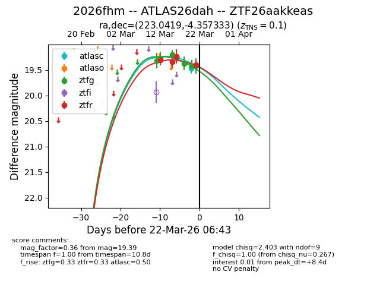
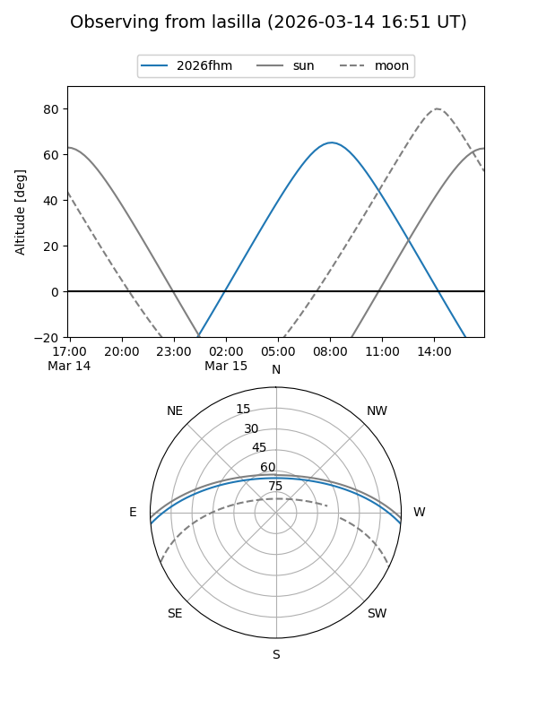
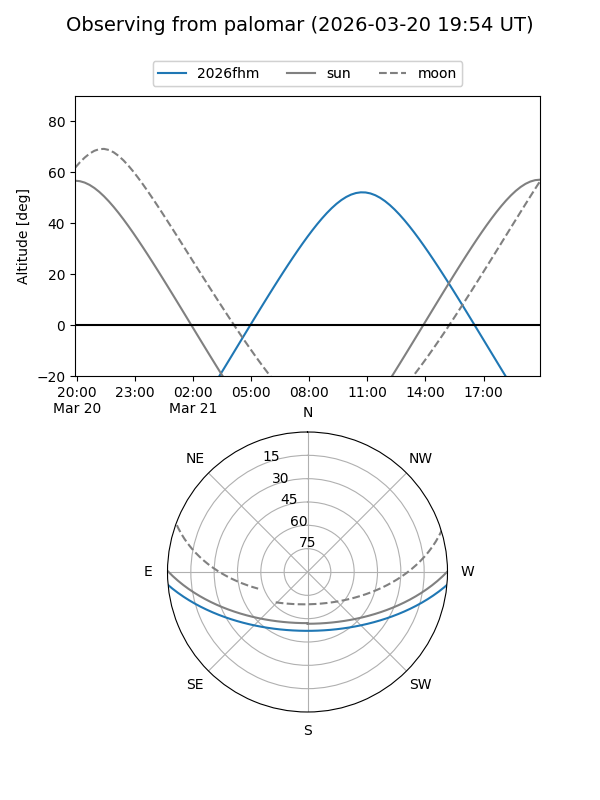
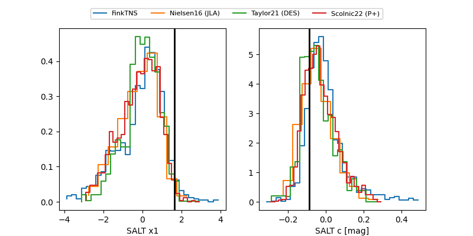

2026fhm
Target 2026fhm at 2026-03-22 06:46
Aliases and brokers:
FINK: link
Lasair: link
ALeRCE: link
TNS: link
YSE: link
alt names
ZTF26aakkeas (ztf,fink_ztf)
2026fhm (tns,yse)
ATLAS26dah (atlas)
Coordinates:
equatorial (ra, dec) = 223.0419,-4.35733
equatorial (HMS+DMS) = 14:52:10.05,-04:21:26.40
galactic (l, b) = (350.3521,+47.09337)
Flags:
confirmed ia
Photometry:
last atlasc=19.46, ztfg=19.42, ztfr=19.39
1 atlasc, 7 ztfg, 4 ztfr detections
Lightcurve

Visibility


Additional plots
